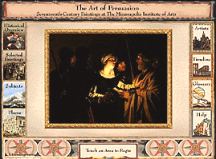

The Art of Persuasion: 17th-Century European Painting(c) Location: European 15th-17th Century Art, 3rd floor Travel back in time to visit the people, places, and cultures that inspired many of the great works in our 17th-century European painting collection. Sixteen digital movies, 30 artist biographies, an interactive timeline, and a comprehensive glossary of art terms help you comprehend this fascinating and highly productive era. |